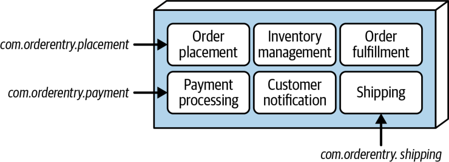
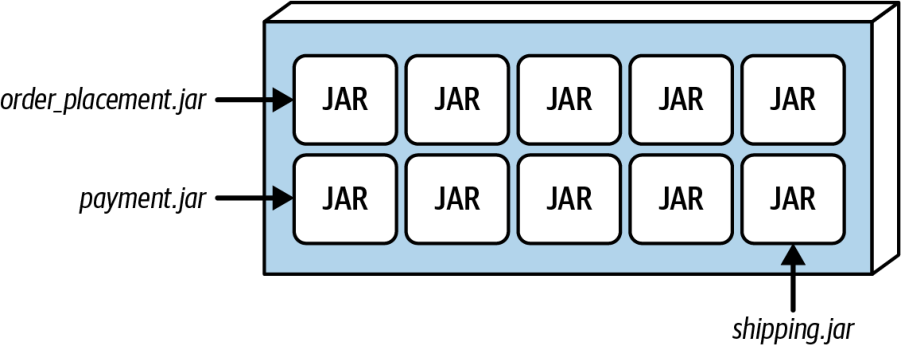
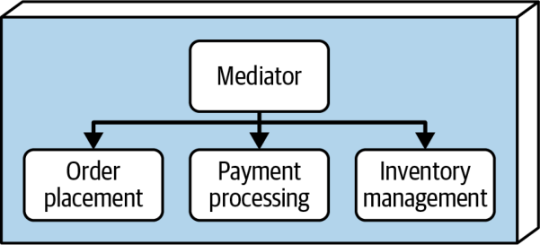

ویژگیهای خاصِ سبک
در این سبک معماری، حوزهها (یا در برخی موارد زیرحوزهها) ماژول نامیده میشوند. ماژولها را میتوان به یکی از دو شیوه سازماندهی کرد. سادهترین معماری ساختارِ تکپارچه (monolithic structure) است که در آن همهٔ ماژولها و مؤلفههای منطقیِ متناظرشان در یک پایگاه کدِ واحد جای دارند و با فضای نام یا ساختارِ دایرکتوریای که در آن قرار گرفتهاند از هم مرزبندی میشوند. گزینهٔ اندکی پیچیدهتر ساختارِ ماژولار (modular structure) است که در آن هر ماژول بهصورتِ یک مصنوعِ مستقل و خودبسنده (self-contained artifact)، مانندِ یک فایلِ JAR یا DLL، بازنمایی میشود و ماژولها در هنگامِ استقرار در یک واحدِ نرمافزاریِ تکپارچه ترکیب میشوند.
مانندِ همهچیز در معماری نرمافزار، انتخاب میانِ این دو گزینهٔ ساختاری به عوامل و مصالحههای فراوانی بستگی دارد. بخشهای زیر هر دو گزینه را معرفی میکنند و مصالحههای متناظرشان را بررسی میکنند.
ساختارِ تکپارچه
در ساختارِ تکپارچه، همهٔ ماژولهایی که سیستم را بازنمایی میکنند در یک مخزن کد منبعِ واحد جای دارند. همهٔ کدِ مرتبط با هر ماژول، هنگامِ تحویل یا انتشارِ نرمافزار، یکجا و بهصورتِ یک واحد مستقر میشود. این گزینهٔ ساختاری در شکل ۱۱-۲ نشان داده شده است. هر ماژول با یک دایرکتوریِ سطحبالای جداگانه بازنمایی میشود که مؤلفهها و هر زیرحوزهای را که آن ماژول را میسازد در بر میگیرد.

فضاهای نامِ زیر نشان میدهند که یک تکپارچهٔ ماژولار برای معماریِ نشاندادهشده در شکل ۱۱-۲ ممکن است چه شکلی داشته باشد:
com.orderentry.orderplacement
com.orderentry.inventorymanagement
com.orderentry.paymentprocessing
com.orderentry.notification
com.orderentry.fulfillment
com.orderentry.shippingاین سادهترین گزینه برای تکپارچهٔ ماژولار است: همهٔ کدِ منبعِ سیستم در یک جا قرار دارد و از این رو نگهداری، آزمون و استقرارش آسانتر است. اما برای حفظِ مرزهای هر ماژول به حاکمیتی سختگیرانه نیاز است (بخش «حاکمیت» را در صفحهٔ ۱۷۲ ببینید). هرچند این گزینهٔ ساختاری ساده است، توسعهدهندگان گرایش دارند کدِ بیش از حدی را میانِ ماژولها بازاستفاده کنند و نیز اجازهٔ ارتباطِ بیش از حد میانِ ماژولها را بدهند (بخش «ارتباطِ میانِ ماژولها» را در صفحهٔ ۱۶۸ ببینید). این رویهها میتوانند یک تکپارچهٔ ماژولارِ خوشمعماری را به یک توپِ بزرگِ گِلِ بیساختار تبدیل کنند.
ساختارِ ماژولار
در ساختارِ ماژولار، ماژولها بهصورتِ مصنوعهای خودبسنده (مانندِ فایلهای JAR و DLL) بازنمایی میشوند و سپس در هنگامِ استقرار در یک واحد استقرارِ واحد کنارِ هم قرار میگیرند. شکل ۱۱-۳ این گزینه را با استفاده از فایلهای JAR در پلتفرم Java نشان میدهد.

مزیتِ این ساختار آن است که هر ماژول خودبسنده است و به تیمها امکان میدهد روی ماژولهای جداگانه کار کنند (بخش «ملاحظاتِ توپولوژی تیم» را در صفحهٔ ۱۷۴ ببینید)؛ بسیاری از اوقات حتی در مخزن کد منبعِ اختصاصیِ خودِ تیم برای آن ماژولها. این گزینه زمانی خوب کار میکند که ماژولها تا حدِ زیادی از ماژولهای دیگر مستقل باشند. همچنین برای سیستمهای بزرگتر و پیچیدهتری که هر ماژولشان به نوعِ متفاوتی از تخصص یا دانشِ کسبوکار نیاز دارد، بهخوبی کار میکند. در گزینهٔ ساختارِ ماژولار، توسعهدهندگان کمتر به بازاستفادهٔ بیش از حدِ کد یا ارتباطِ بیش از حدِ ماژولها با یکدیگر گرایش دارند (بخش «ارتباطِ میانِ ماژولها» را در صفحهٔ ۱۶۸ ببینید). این گزینه همچنین معمولاً مرزهای تمیزتری میانِ ماژولها و جداسازی دغدغههای کلیِ بهتری پدید میآورد.
اما این گزینهٔ ساختاری زمانی اثربخشیاش را از دست میدهد که ماژولهای وابسته به یکدیگر نیاز به ارتباط داشته باشند. در چنین وضعیتی، رویکردِ ساختارِ تکپارچه اثربخشتر است.
ارتباطِ میانِ ماژولها
ارتباط میانِ ماژولها در این سبک معماری هرگز چیزِ خوبی نیست، اما میپذیریم که در بسیاری از موارد ضروری است. برای نمونه، در معماریِ نشاندادهشده در شکل ۱۱-۲، ماژولِ OrderPlacement باید با ماژولِ InventoryManagement ارتباط برقرار کند تا موجودیِ کالای سفارشدادهشده را تنظیم کند و هر پردازشِ افزودهٔ دیگری را انجام دهد (برای نمونه، اگر موجودی بیش از حد کم باشد، سفارشِ کالای بیشتری بدهد). این ماژول همچنین باید با ماژولِ PaymentProcessing ارتباط برقرار کند تا پرداختِ یک سفارش را اعمال کند. دو گزینهٔ اصلی برای ارتباط میانِ ماژولها وجود دارد که در بخشهای زیر شرح میدهیم.
رویکردِ همتابههمتا
سرراستترین راهحل، ارتباطِ سادهٔ همتابههمتا (peer-to-peer) میانِ ماژولهاست. در این رویکرد، یک فایلِ کلاس در یک ماژول، کلاسی را در ماژولی دیگر نمونهسازی میکند و متد یا متدهای لازمِ آن کلاس را برای انجامِ عملیات فرامیخواند (شکل ۱۱-۴ را ببینید).

یکی از مشکلاتِ رویکردِ تکپارچه آن است که نمونهسازیِ هر کلاسی از ماژولی دیگر برای توسعهدهندگان بیش از حد آسان است. همین امر لغزیدن از یک معماریِ خوشساختار به ضدالگوی توپِ بزرگِ گِل را آسان میکند (شکل ۹-۱ را ببینید).
اما در ساختارِ ماژولار، کلاسهای ماژولی دیگر ممکن است به جای یک دایرکتوریِ جداگانه در مخزن کد منبع، در مصنوعهای بیرونیِ جداگانه (فایلهای JAR یا DLL) قرار داشته باشند. ماژولی که با ماژولهای دیگر ارتباط دارد، بدونِ ارجاع به کلاسها کامپایل نمیشود؛ یعنی توسعهدهنده باید میانِ آن ماژولها یک وابستگیِ زمانِ کامپایل (compile-time dependency) پدید آورد. پاسخِ معمول به این مشکل ساختنِ یک کلاسِ واسطِ مشترک (shared interface class) میانِ آن ماژولهاست (در یک فایلِ JAR یا DLL مشترکِ جداگانه)، تا هر ماژول بتواند مستقل از ماژولهای دیگر کامپایل شود. در هر حال، ارتباطِ بیش از حد میانِ ماژولها در رویکردِ ساختارِ ماژولار به ضدالگوی جهنمِ DLL (DLL Hell) میانجامد (یا در پلتفرم Java، به ضدالگوی جهنمِ JAR (JAR Hell)).
رویکردِ میانجی
رویکردِ میانجی (mediator) با بهکارگیریِ یک مؤلفهٔ میانجی که لایهٔ انتزاعی (abstraction layer) میانِ ماژولها پدید میآورد، ماژولها را از هم جدا میکند. میانجی نقشِ هماهنگکننده را دارد: درخواستها را میپذیرد و آنها را به ماژولهای مناسب میرساند. شکل ۱۱-۵ این رویکرد را نشان میدهد.

خوانندهٔ تیزبین درمییابد که هرچند رویکردِ میانجی ماژولها را از هم جدا میکند، هر ماژول در عمل به میانجی کوپل شده است. این رویکرد همهٔ کوپلینگ و وابستگیها را از میان نمیبرد، اما معماری را ساده میکند و ماژولها را از یکدیگر مستقل نگه میدارد. توجه کنید که این میانجی است، نه ماژولهای وابسته، که برای فراخوانیِ کارکردهای ماژولهای دیگر به نوعی API یا واسط نیاز دارد.